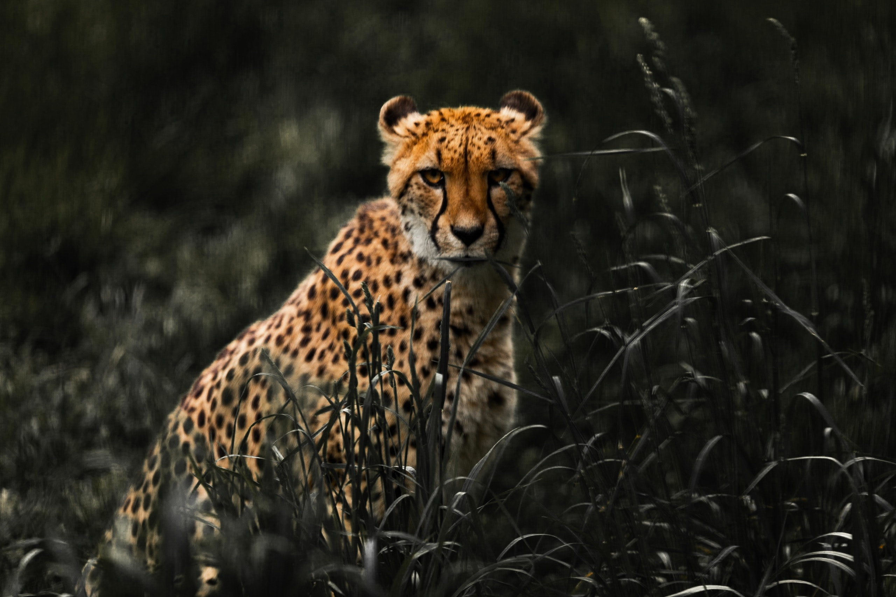

ANIMAL WEB PAGE
land animals



description
Terrestrial animals are animals that live predominantly or entirely on land (e.g. cats, ants,spiders),
as compared with aquatic animals, which live predominantly or entirely in the water (e.g. fish, lobsters, octopuses),
and amphibians, which rely on a combination of aquatic and terrestrial habitats
water animals


description
Dolphins have smooth skin, flippers, and a dorsal fin. They have a long, slender snout with about 100 teeth,
and a streamlined body. The single blowhole on top of their head has a flap that opens to reveal a pair of
nostrils, which dolphins use for breathing when they surface.
animal sounds
sparrow s
frog sounds
lion roaring